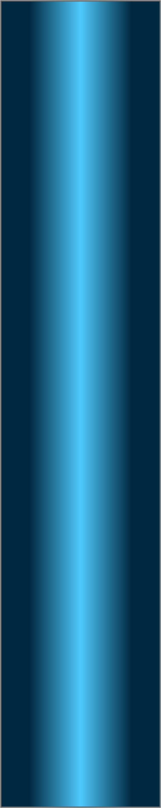
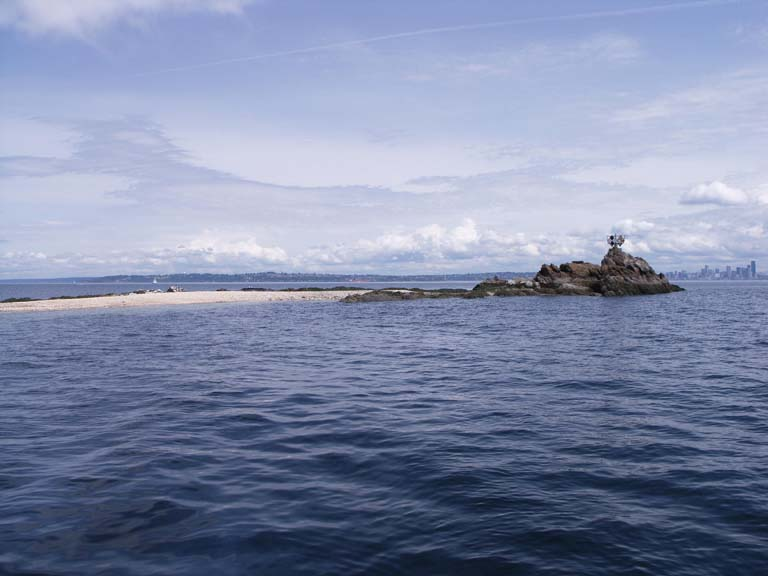
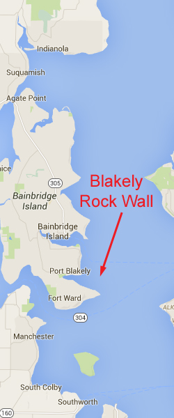

Blakely Rock Wall
Topography: Multiple rock faces up to 30 feet tall that combine to form a wall on a moderately sloping cobblestone substrate.
Puget Sound marine life rating: 4
Puget Sound structure rating: 3
Diving depth: 100 feet
Highlight: Excellent off-slack dive with many deep crevices to explore. Opportunities to see giant Pacific octopus and possibly catch a glimpse of a red brotula.
Skill level: Intermediate
GPS coordinates: N47° 35.645’ W122° 28.919’
Access by boat: Blakely Rock is about a mile north of Restoration Point. This prominent rock is exposed at high tide and sports a large black and white navigational marker. The dive site is located about 75 yards southwest of the Blakely Rock and is often marked with a dive site marker buoy. If the buoy is not present, the wall is easily located with a depth sounder as the substrate quickly drops from 60 to 80 feet or more when moving from north to south.
Shore access: None
Dive profile: This dive site is also referred to as "China Wall". The signature feature of this site is a series of rock faces that form a wall. The top of the wall lies in 60-80 feet of water. The deepest section of the wall, the western reach, bottoms out at around 100 feet. My time on this deep wall is limited by my no-deco schedule, even when breathing Nitrox.
The dive site marker buoy makes finding the wall extremely easy. The concrete anchor block for the buoy is located on the edge of the wall in about 60 feet of water. The surrounding rock faces are about 10 feet high. The wall faces south and runs in an east-west direction from the block. The more dramatic structure is to the west. Sections of the wall are separated by swaths of cobblestone substrate up to 15 feet wide.
The height of the wall varies greatly. The rocky structure slowly dwindles to the east and gives way to a moderately sloping substrate. The wall grows to 30 feet in height to the west as the depth at the base of the wall drops to around 100 feet. The western reach of the wall abruptly ends and gives way to a moderately sloping substrate. The wall is pocked with vertical fissures that provide excellent sanctuaries for octopus, rockfish, and lingcod. The wall spans about 60 yards from end to end.
I begin my dive exploring the west end as I find it much more rugged and interesting. I explore the base of the wall and vertical fissure as I work west, then come back along the top of the wall and take my time to poke around the backside of the western faces. I slowly continue my way east past the anchor block and explore the shallower eastern reaches. I always feel compelled to swim around an isolated, moderate-sized boulder at the base of the wall situated near the anchor block in about 80 feet of water.
I return back to the marker buoy line once my no-deco time runs low. I then have two choices - I can ascend the line or head upslope and spend another 15-20 minutes in the shallows next to Blakely Rock. I take a compass bearing from the marker buoy to the west side of Blakely Rock before I begin my dive in case I opt for the shallows. I am a bit more cautious about swimming to the rock on major exchange days in case I get off course and strand myself in a river of current. The silt, cobblestone, and kelp strewn bottom slopes upwards from the wall towards the shallows at a moderate pace. A 10 foot high wall is located southwest of Blakely Rock in about 25 feet of water. It is covered in broadleaf kelp and makes for an entertaining safety stop. An extensive sandy area blankets the west side of the rock and harbors an eelgrass bed that is also fun to explore on higher tides.
My preferred gas mix: EAN 34
Current observations:
Current Station: Admiralty Inlet
Noted Slack Current Corrections: None.
I have done this dive many times off-slack and not noted much current on the central and eastern section of the wall. The very far western reach is susceptible to current off-slack. Swirling broadleaf kelp ahead warns me not to go too much further to the west.
Boat Launch:
Don Armini Boat Ramp (West Seattle). Approximately 5 miles from this site.
Facilities: None
Hazards:
Depth: This dive starts at 70 feet and gets deeper. Proper air supply and no-deco time management are critical.
Current: The farthest western reach of the wall is susceptible to current off-slack, particularly on heavy exchanges.
Boat traffic: Moderate boat traffic frequents this area during summer months. Sailboat regattas sometimes use Blakely Rock as a rounding point.
Marine life: Because this site offers excellent protection from nearby currents and a multitude of hiding places for creatures large and small, all sorts of life flocks behind this wall. The largest lingcod I have seen resided in one of the larger fissures. This mammoth lingcod was an honest 6 feet long - a true monster even by Edmonds Underwater Park standards. I haven’t seen it in a number of years. Maybe it got tired of eating divers and moved on.
Giant Pacific octopus thrive here, but finding them is hit and miss. At times I can find four or five giant Pacific octopus. At other times - not one. I look for the tell-tale sign of a stream of broken crab shells below a crevice or hole to find an octopus den.
This site serves host to a number of red brotulas - a very shy fish with a tail like an eel that likes to hide in deep lairs. I usually only get a fleeting glimpse of this fish as it retreats deep into its lair when approached.
Blakely Rock also serves as a resting place for harbor seals. I occasionally see harbor seals while diving here - either on the wall or in the shallows. These acrobatic swimmers are shy, but occasionally approach a diver. A large harbor seal almost scared me out of my drysuit on one occasion as I was holding on to the ascent line during my safety stop at this site. The seal bolted by me from behind as I was relaxing and counting down the minutes.
Puget Sound marine life rating: 4
Puget Sound structure rating: 3
Diving depth: 100 feet
Highlight: Excellent off-slack dive with many deep crevices to explore. Opportunities to see giant Pacific octopus and possibly catch a glimpse of a red brotula.
Skill level: Intermediate
GPS coordinates: N47° 35.645’ W122° 28.919’
Access by boat: Blakely Rock is about a mile north of Restoration Point. This prominent rock is exposed at high tide and sports a large black and white navigational marker. The dive site is located about 75 yards southwest of the Blakely Rock and is often marked with a dive site marker buoy. If the buoy is not present, the wall is easily located with a depth sounder as the substrate quickly drops from 60 to 80 feet or more when moving from north to south.
Shore access: None
Dive profile: This dive site is also referred to as "China Wall". The signature feature of this site is a series of rock faces that form a wall. The top of the wall lies in 60-80 feet of water. The deepest section of the wall, the western reach, bottoms out at around 100 feet. My time on this deep wall is limited by my no-deco schedule, even when breathing Nitrox.
The dive site marker buoy makes finding the wall extremely easy. The concrete anchor block for the buoy is located on the edge of the wall in about 60 feet of water. The surrounding rock faces are about 10 feet high. The wall faces south and runs in an east-west direction from the block. The more dramatic structure is to the west. Sections of the wall are separated by swaths of cobblestone substrate up to 15 feet wide.
The height of the wall varies greatly. The rocky structure slowly dwindles to the east and gives way to a moderately sloping substrate. The wall grows to 30 feet in height to the west as the depth at the base of the wall drops to around 100 feet. The western reach of the wall abruptly ends and gives way to a moderately sloping substrate. The wall is pocked with vertical fissures that provide excellent sanctuaries for octopus, rockfish, and lingcod. The wall spans about 60 yards from end to end.
I begin my dive exploring the west end as I find it much more rugged and interesting. I explore the base of the wall and vertical fissure as I work west, then come back along the top of the wall and take my time to poke around the backside of the western faces. I slowly continue my way east past the anchor block and explore the shallower eastern reaches. I always feel compelled to swim around an isolated, moderate-sized boulder at the base of the wall situated near the anchor block in about 80 feet of water.
I return back to the marker buoy line once my no-deco time runs low. I then have two choices - I can ascend the line or head upslope and spend another 15-20 minutes in the shallows next to Blakely Rock. I take a compass bearing from the marker buoy to the west side of Blakely Rock before I begin my dive in case I opt for the shallows. I am a bit more cautious about swimming to the rock on major exchange days in case I get off course and strand myself in a river of current. The silt, cobblestone, and kelp strewn bottom slopes upwards from the wall towards the shallows at a moderate pace. A 10 foot high wall is located southwest of Blakely Rock in about 25 feet of water. It is covered in broadleaf kelp and makes for an entertaining safety stop. An extensive sandy area blankets the west side of the rock and harbors an eelgrass bed that is also fun to explore on higher tides.
My preferred gas mix: EAN 34
Current observations:
Current Station: Admiralty Inlet
Noted Slack Current Corrections: None.
I have done this dive many times off-slack and not noted much current on the central and eastern section of the wall. The very far western reach is susceptible to current off-slack. Swirling broadleaf kelp ahead warns me not to go too much further to the west.
Boat Launch:
Don Armini Boat Ramp (West Seattle). Approximately 5 miles from this site.
Facilities: None
Hazards:
Depth: This dive starts at 70 feet and gets deeper. Proper air supply and no-deco time management are critical.
Current: The farthest western reach of the wall is susceptible to current off-slack, particularly on heavy exchanges.
Boat traffic: Moderate boat traffic frequents this area during summer months. Sailboat regattas sometimes use Blakely Rock as a rounding point.
Marine life: Because this site offers excellent protection from nearby currents and a multitude of hiding places for creatures large and small, all sorts of life flocks behind this wall. The largest lingcod I have seen resided in one of the larger fissures. This mammoth lingcod was an honest 6 feet long - a true monster even by Edmonds Underwater Park standards. I haven’t seen it in a number of years. Maybe it got tired of eating divers and moved on.
Giant Pacific octopus thrive here, but finding them is hit and miss. At times I can find four or five giant Pacific octopus. At other times - not one. I look for the tell-tale sign of a stream of broken crab shells below a crevice or hole to find an octopus den.
This site serves host to a number of red brotulas - a very shy fish with a tail like an eel that likes to hide in deep lairs. I usually only get a fleeting glimpse of this fish as it retreats deep into its lair when approached.
Blakely Rock also serves as a resting place for harbor seals. I occasionally see harbor seals while diving here - either on the wall or in the shallows. These acrobatic swimmers are shy, but occasionally approach a diver. A large harbor seal almost scared me out of my drysuit on one occasion as I was holding on to the ascent line during my safety stop at this site. The seal bolted by me from behind as I was relaxing and counting down the minutes.



Giant Pacific Octopus
Giant Pacific Octopus
Red Irish Lord
Decorated Warbonnet
Underwater imagery from this site


Bi-Colored Nudibranch
Mosshead Warbonnet

Grunt Sculpin
Northern Kelp Crab